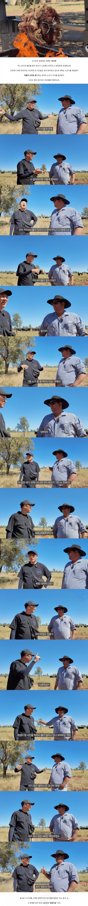

호주산 소고기가 싼 이유.jpg
댓글
으아악 플라잉 카우보이다
유해조수 잡으러 헬기타고 기관총 쏘는 영상 많음
진짜 맛있고 쌈
호주 갔을 때 매 끼니 먹음
호주소 풀먹고 자라서 향이 다르다던데 진짜야?
풀먹고 자라면 맛없어 ㅋㅋㅋㅋ
건강에는 조금더 좋을수있는데 풀먹고자라면맛이적음
맛.을 어디에 방점을 찍냐에 따라 다르지
요즘 고기는 품질?이 너무 좋으니깐
씹을때 식감외엔 아무런 향도 맛도 없음
맛이란건 향이 우선이라 보는데
소든 돼지든 걍 너무 고품질인건지
일부러 냄새뺀다고 하니깐 향이 사라진건지 모르겟음
요샌 숙성고기도 향이 읍더라고
한우나 고베 비프에 비해서 맛이 딸리고 질김. 그래서 나는 호주에 있을 때 콜스나 울워스(호주 대형 마트)에서 블랙 앵거스 갈은 걸 사다가 양파, 마늘 다져서 페티 만들어서 후라이팬에 구워 먹었었음. 매 끼니 마다 두꺼운 페티 한장씩 먹어도 하루 식비가 호주 달러로 20불이 안 들어 갔었음
풀먹은 소 사료먹은 소 선택 가능하더라
방목하면 지방(마블링)이 적어지고 육향이 강해져서 싫어하는 사람도 있지. 한국은 좀 극단적으로 소든 돼지든 향이 없는 고기를 높게 쳐주는거 같음.
그래서 한국이나 일본 수출용은 도축하기 전 일정기간 동안 옥수수만 먹인다고 들었음
ㅋㅋㅋㅋ 울월스 티본스테이크 만원주고 사먹던거 기억나네 워홀러 최고의 사치 ㅋㅋ
ㄹㅇ 햄버거 패티도 맛있던데
한국 ㅈㄴ작네
저 정도 키워야 소 방귀로 지구 온난화 오는구나
근데 사람이 압도적으로 많은데 왜 사람방귀는 %에 넣지도 않음?
소가 더 많지 않음?
대충 생각해도 많을 리가 없지
소가 사람 보다 압도적으로 메탄가스 많이 생성할껄? 소 한마리가 소형차 1대 분이라고 했던거 가틈 사람은 그에 비해 미미한 수준일껑
대신 사람은 차타고 다니잔슴
사람 방귀는 구수하잖아
여자 방귀는 내가 다 마시거든
사람 방귀 낀다고 어떻게 할 수가 없잖아..
사람방구늨 공기청정기가 해결해줌!
우리나라 영토가 호주의 2프로도 안된다고??
AI 개요
우리나라 남한 영토는 호주 전체 면적의 약 1.3%에 불과하며, 북한을 합친 한반도 전체로 계산하더라도 약 2.9% 수준입니다.
시발 우물안 개구리였노
어차피 호주 땅 90%는 사막 미개척 지역이라 고만고만함

우물안 개붕이!
사람사는데는 크기 비슷하고
오히려 도시 시드니 멜번 브리즈번 이런데 가보면 서울 부산 대구 이런데보다 좆만함 ㅋㅋㅋ
브리즈번이 호주3번째 도시래서 갔는데
도심 크기가 뭔 진주시 만하드라
혁신도시와 남강유등축제가 있는 진주를 다시는 무시마라
개구리네
육식맨 요새 나이들어서 그런지 잡식맨으로 바꾸고 테슬라 리뷰도 올라고 잡탕 됐더라
할만한 고기요리는 다 해봤나봄
요리 유튜버들이 시간 좀 지나면 맞이 하는 한계.. 다들 그럼..
뭔가 해볼만한거 안해볼만한거 다 해봐서 더 찍을게 없음
옛날 방송 같은거야 일주일에 한번 방송하고, 지나간거 찾아보기도 힘들었는데 요즘은 5년 지난 것도 바로 볼 수 있고, 올리는 텀도 주에 몇 회씩 되닌깐
미국은 한반도 2.2개 규모의 땅에 옥수수를 재배하고 있다네
뭔 소 방귀가 문제되나했는데 저래서 문제군
솔직히 호주나 뉴질랜드 방목 소고기 존나 별로임
누가 영국 식민지 아니랄까봐
현지 식당에서 먹으면 더 노맛임
고기 자체도 별로지만 맛있게 하려는 노오력은 더 별로임
근데 와규나 한우 기름진 소 좋아하면 미국 호주소 맛없지 ㅋㅋㅋ
호주도 와규가 있어
우리나라 진짜 작네 ㅋㅋㅋㅋ
풀먹고 자란거 냄새안나나..?
저 넓은 땅에 43만 마리 밖에 없다고...?
근데 그 냄새 난다고 거부감 갖는건 어쩔수 없는거 같아
나는 전혀 못 느끼지만 그거 불편한 사람들은 한우만 먹더라
그러면서 하는 말들이 한우는 첫한점이 진짜 맛있고 금방 물린다고
달링다운 와규 살치살 꽃갈비살 아랫등심은 레전드다
집에서 먹기에 진짜 훌륭함
굳이 한우 먹어야 하나 싶은 규모네
싸서 호주산 애용하긴하는데 확실히 마블링에 익숙한 김치입맛이라서 그런지 별로긴함
한편으로는 좁은 사육장에서 맛있어지는 사료 먹여키운소랑
저렇게 방목시켜서 자란 소랑 어떤게 더 좋은건지는 고민될때 나는 가성비 좋은게 좋아.
어떻게 보면 자연산 소랑 양식장 소인데 자연산이 싸면 좋은거 아닐까
이마트 트레이더스 호주산 자유방목 꽃갈비살 맛있음 근데 맨날 가면 다팔려서 업어
저 정도면 카우보이가 헬기타고 다니겐네.